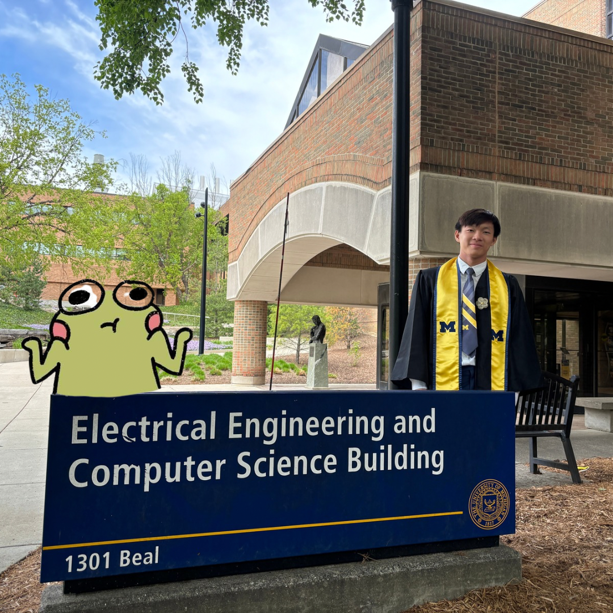

Graduated with the Class of 2024 from the University of Michigan with my B.S.E in Computer Engineering

I stressed, I struggled, I cried, I prayed, I survived!
Relevant Courses Taken
EECS: 598: Pervasive Computing Machine Learning
Personal Insight: Implemented a crowd monitoring machine learning model that detects emotions/actions while utilizing existing vibrational pattern data collected from Michigan Stadium.
Skills Acquired: Python, Machine Learning
Rating:7/10
EECS: 507: Embedded Systems Research
Personal Insight: A valuable course for exploring the foundations of research, though it confirmed that my strengths and interests lie outside the research path.
Skills Acquired: Resarch Experience
Rating:5/10
EECS: 483: Construction Compiler
Personal Insight: Amazing class if you wanna learn about implementing efficient compilers.
Skills Acquired: Rust, LLVM, x86
Rating:8/10
EECS: 473: Advance Embedded Systems
Personal Insight: This class was intense, with an overwhelming amount of material packed into just six weeks. The remaining time was dedicated to working on our project. Overall, I often felt like I was in over my head, but in the end, it was incredibly rewarding!
Skills Acquired: C, C++, FreeRTOS, Linux Drivers, PCB Design
Rating:9.5/10
EECS: 461: Embedded Controls
Personal Insight:This class mainly focused on microcontroller programming for the automotive industry, real-time operations, and adaptive cruise control design. A lot of math was involved!
Skills Acquired: C, CAN, MATLAB Simulink
Rating: 7/10
EECS: 373: Intro Embedded Systems
Personal Insight:This was the first embedded systems class I took, where I learned about GPIOs and various peripherals. This class was the main reason I got into embedded software.
Skills Acquired: C
Rating: 7/10
EECS: 370: Computer Organization
Personal Insight:I really enjoyed this class because it taught me how computers execute programs and ignited a passion for focusing more on the hardware side of my degree.
Skills Acquired: C, Assembly
Rating: 8/10
EECS: 281: Data Structures
Personal Insight: It was probably my most challenging yet rewarding decision to take this course, even though
it was optional for my degree. I spent countless hours and nights not only debugging and rewriting algorithms but also studying.
The amount of time I dedicated to this class was significantly more than any other class I took. Completing it felt incredibly rewarding
and boosted my confidence, knowing that I passed one of the hardest CS weed-out classes at Michigan.